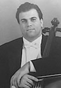

|  |
A native of Leningrad, Russia, Roman Mekinulov began cello studies at the age of five at the Leningrad Music School. At age 12 and 14, he was a winner of the Young Artists Competition of Leningrad. In 1985, he was presented in the Winner’s Showcase Series at the Great Philharmonic Hall in Leningrad. At age 16, Mr. Mekinulov entered the Rimsky-Korsakov College where he studied with Georgy Ginovker. As a chamber musician, he has performed with various ensembles, and, in 1988, was awarded First Prize in the Leningrad Chamber Music Competition.
In 1989, he emigrated to the United States and continued his studies at the Juilliard School in New York, where he has successfully accomplished Bachelor’s and Master’s Degrees under scholarship in the class of Professor Harvey Shapiro.
As an active recitalist, chamber musician and concerto soloist, Roman Mekinulov has performed extensively throughout the United States, Italy, Austria, Hungary, Germany, France, Greece, Denmark, Switzerland, as well as his native Russia. In 1990, he was a featured artist on the Young Artists Showcase - Series of New York’s WQXR Public Radio Station. Mr. Mekinulov has won the First Prize in the Five Towns Music Foundation Competition, as well as top prizes in the Friday Night Music Club and the Great Neck Music Competitions. He has also participated in various master classes in Europe, with such artists as Mario Brunello, Alain Meunier, Tsuoshi Tsutsumi, Aner Bilsma and Iwan Monighetti.
In 1991, Roman Mekinulov formed with Greek pianist Charis Dimaras a professional ensemble, The Emerald Duo, which has performed to great acclaim on both sides of the Atlantic and has won the Palma d’Oro International Music Competition in Italy. Mr. Mekinulov has appeared as a principal cellist of the Juilliard Symphony and Orchestra under Kurt Masur, Hugh Wolf and Leonard Slatkin, the North Carolina Symphony in their European Tour, as well as the Schleswig-Holstein Festival Orchestra in Germany with such conductors as Rostropovich, Menuchin and Eschenbach.
In April of 1993, as a result of winning the 1992 Young Artists International Auditions Cello Award, Roman Mekinulov presented his New York Recital - Debut in Carnegie’s Weill Recital Hall. On this occasion critic Edith Eisler of the “Strings”- Magazine wrote: “Twenty-year-old cellist Roman Mekinulov from Russia is very serious, very talented and very good. He handles instrument and bow with ease, has a beautiful tone and communicates genuine musicality.”
Since 1995-96 season Mr. Mekinulov has been repeatedly invited to substitute in the New York Philharmonic under their music director, Kurt Masur, and other guest conductors, in concert, as well as recordings for Teldec. In the fall of 95 he made his solo-debut with orchestra in the USA, performing R. Schumann’s Cello Concerto with Greater Newburgh Symphony. In July of 1996 he performed a recital at the famous Concertgebouw Hall in Amsterdam. In 1998 he completed a series of chamber music recitals in honor of the 100-year anniversary of Brahms’ death in Germany and Greece.
In 1998 Mr. Mekinulov was appointed principal cellist of the Orquestra Sinfonica do Estado de Sao Paulo in Brazil where he performed under leading conductors and with leading soloists of the World. He was featured as a soloist with all of the leading orchestras allover Brazil as well as Argentina and Peru. In September of 2001 Mr. Mekinulov was nominated for the prestigious Carlos Gomes Prize in the “Best Instrumentalist of the Year” category.
In 2001 Mr. Mekinulov was appointed principal cellist of the Buffalo Philharmonic Orchestra. He currently resides in Buffalo with his wife Sebnem, a lyric soprano, and their children Talia, 3, and Benjamin, 9 months.
|